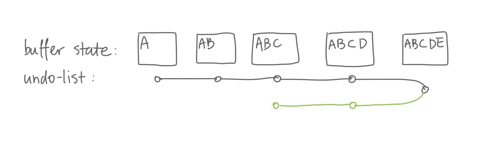
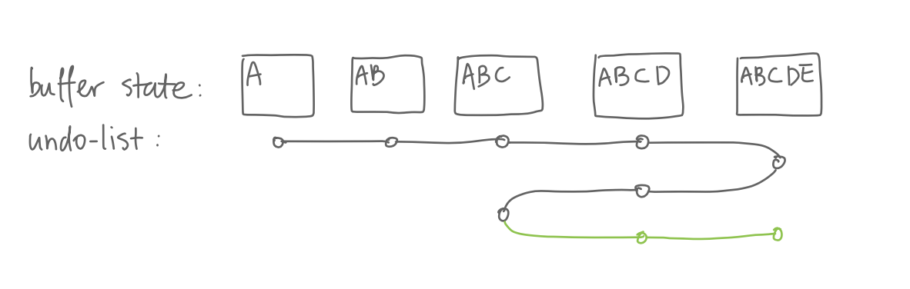
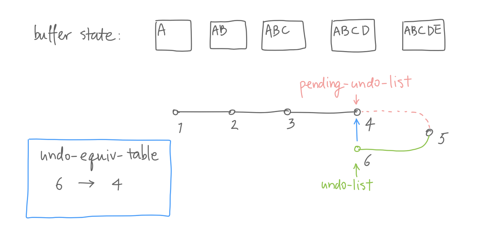
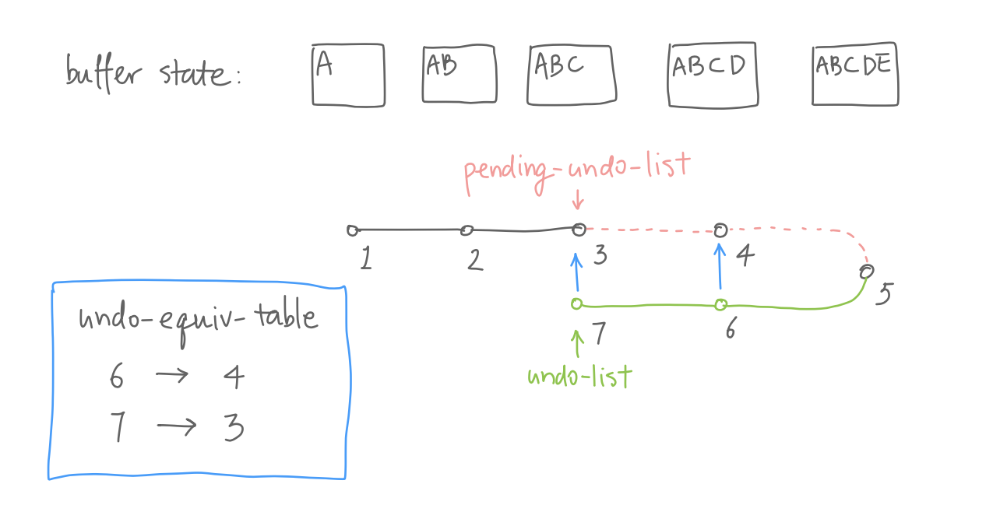
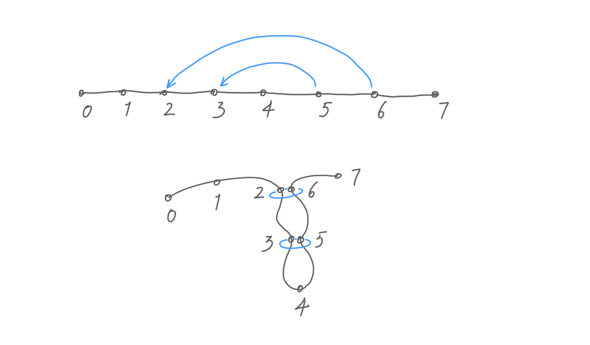
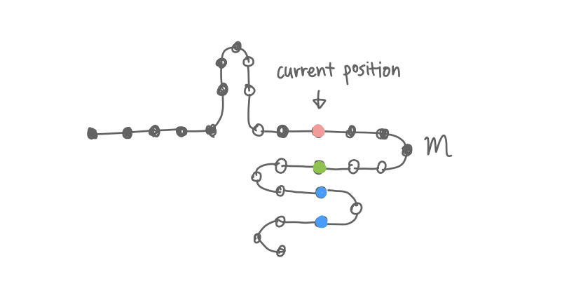
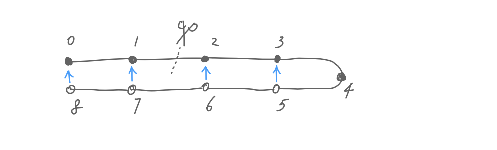
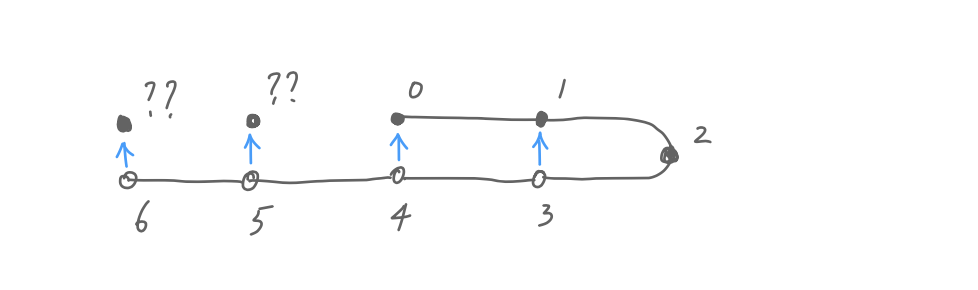

Construct an Undo Tree From an Linear Undo History
Table of Contents
Emacs comes with a powerful but arguably strange undo system, it considers the action of undo themselves undo-able, so instead of redo, you just undo a previous undo. This allows you to return to every previous buffer states, something a conventional undo system doesn’t guarantee. But Emacs’s undo history can easily get out of hand when you undo, then undo that undo, then undo the undo of undo… You lose your mental model of the undo history very quickly and end up holding the undo button until you see the desired buffer state.
One idea to take advantage of both worlds is to use an undo tree. An undo tree is easy to navigate and understand. The ubiquitous undo-tree.el is exactly for that. As a coding challenge, I have been thinking about how to construct a tree out of the linear undo record. That way we can avoid keeping a internal data structure of undos like undo-tree does. This post describes the way I figured out to do that.
1 How does undo work in Emacs
;; An example of `buffer-undo-list'. (nil (11369 . 11377) ; Insertion from 11369 to 11377. nil (11332 . 11344) ; Insertion from 11332 to 11344. ("<li" . 11332) ; Deleteion of "<li" to 11322. nil (t 24653 33109 208947 953000))
Emacs keeps undo records in buffer-undo-list. Every time the buffer content changes, Emacs pushes multiple entries onto the list, each representing a change like insertion, deletion, etc. These entries are grouped by the nil entries as delimiters, so multiple actions can be undone at once. Here I’ll call a group of entries a “modification”.

For example, if I insert “ABCDE” into a buffer 1, and undo twice, I’ll see “ABC” in the buffer, and two undo modifications would be pushed onto buffer-undo-list, one for “E” and the other “D”. If we keep undoing, we will keep going back until all edits are undone.

To stop undo and start redo, we press C-g which breaks the undo chain 2. All the undo records we just created are now considered as ordinary modifications and further undo undoes these previous undo’s. So if we undo twice, we are back to “ABCDE”.
How does this “undo chain” work? When we invoke the first undo command, it sets pending-undo-list to the value of buffer-undo-list; further undo commands pop modifications from pending-undo-list and extend buffer-undo-list. And when we break the undo chain, the next undo command will once again set pending-undo-list to the value of buffer-undo-list.
Here’s what happens when branching occurs: if we undo to “ABC”, and insert “F”. Emacs simply pushes a new modification to buffer-undo-list, just like before.

Besides extending buffer-undo-list, Emacs also maps buffer states to their equivalents. After Emacs undid a modification, it maps the tip of buffer-undo-list to the tip of pending-undo-list in undo-equiv-table. This is the key to construct a tree from the linear undo list.

BTW, as shown in the figure, pending-undo-list and buffer-undo-list are really pointing to the same list object, just different cons cells in that list.
2 Constructing the tree

Here is an example undo tree and the corresponding undo list. The undo list can be viewed as “wrapping around” the tree. To “construct” the tree out of the undo list, we need to know:
- Which node to show. In the list, node 4, 5, 6 are duplicates of earlier nodes and don’t need to appear in the tree.
- Establish parent–child relationships between nodes. Starting with node 0, it needs to know node 1 is its child, node 1 needs to know 2 is its child, and so on.

Both are easy to figure out with the help of undo-equvi-table: For modification m (the modification that creates buffer state m), if it is an ordinary change, buffer state m must be a child of m-1; if m is an undo change, then buffer state m must be equivalent to a previous node, say, n. m equivalent to n means 1) we don’t draw m in the tree, only n, and 2) children of m are children of n.
In this example, 2 is a ordinary change, so 2 is a child of 1. 6 is an undo change and is equivalent to 2, so we don’t draw 6, only 2; and 6’s child, 7, becomes 2’s child.
So it turns out that constructing the tree is quite simple: we first go over buffer-undo-list to generate a list of modifications. Then we go over the modification list, identify equivalent nodes and establish parent–child relationships. In the end, we can draw out the tree starting from the very first node, either depth-first or breadth-first.
3 Moving around the tree
Drawing out the tree is only half the story, the undo tree isn’t of any use if we can’t go back and forth in time by moving around on the tree. Say we are at node m and want to move to node n. What should Emacs do to bring us back?
(From now on, I’ll represent nodes created by non-undo modifications with black circle, and nodes by undo modifications with white circle.)
My immediate thought is to just repeatedly call undo until we are at node n. It works, but only within 10 yards: simple movements could easily explode the undo list. For example, suppose we are at node 1 and move back to node 0, what happens to the undo list?
We need to undo from 9 all the way back to 0, going back and forth between 1 and 3. Worse, if we now want to go from 0 to 1, we need to undo from 18 to 1. The undo list doubles every time we move back and forth between 0 and 1.
Hmm, if we are in an undo chain, undoing from 1 to 0 would be so much easier: pending-undo-list would point at 1, and we simply undo modification 1. Why don’t we just do that, regardless of whether we are in an undo chain? During chained undo, undo pops modifications from pending-undo-list and feed them into primitive-undo. We can similarly find the modification between 0 and 1 and just feed it to primitive-undo.
Let’s look at it more closely. If I want to go from node 1 to 2, how do I find a list of modifications to feed to primitive-undo? We can feed it modification 5 to go 5–4, or modification 9 to go 9–8, both of them move us back to the buffer state at node 2. Or we can even go 9–8–7–6–5–4, or 5–4–3–2.
So, to find a valid “route” from m to n, it needs to satisfy: 1) the start is equivalent to m and the destination is equivalent to n, and 2) the start is older than the destination, i.e., start > end, because primitive-undo can only take us backwards in the undo list. Once we found all the valid routes, we pick the shortest one and feed it to primitive-undo, teleport!
3.1 A small problem
Even though we can move between nodes with minimum steps, it is still possible to explode the undo list by simply moving around. For example, juggling between node 0 and 1 in this tree keeps growing the undo list.

It looks innocuous because there is only one modification between 0 and 1. But consider this tree, juggling between node 3 and 387 appends hundreds of modifications to the undo list on every move.
Let’s go back to this tree. Do all that modifications on the bottom look a bit… excessive? Maybe we can trim them off; maybe we can trim redundant modifications from the undo list after every move. The questions is, what nodes are redundant and what need to be preserved?
Let’s see, if we move from 1 to 2, modification 5 can certainly be trimmed; modification 4 can also be trimmed; but we cannot trim modification 3, otherwise node 3 is gone.

Six minutes of deep contemplation 3 reveals that I need to preserve all the non-undo modifications, because they create new unique buffer states.
That means all the modifications before the last non-undo modification—call it m—needs to be preserved; and all the ones after m are dispensable. Conceptually, the undo list before m defines the complete undo tree, and the undo list after is just a tentacle that gets us to the node we want to go.
Now we can move around the tree efficiently, and the length of buffer-undo-list is bound. My crystal ball tells me there is only one problem left.
3.2 Another small problem
As a bonus service for its loyal customers, the garbage collector trims buffer-undo-list automatically.
I’m flattered, does that mean some cons cells will quietly disappear when the lisp machine decides to collect some garbage in the middle of my code? Luckily, that’s not the case. The garbage collector doesn’t release cells in buffer-undo-list when there are references to them besides buffer-undo-list 4. Since the data structure we generated refers to cons cells in the undo list, the boys are safe as long as we hold on to our data structures.


Of course, we can’t let the undo tree grow forever. And when we let the garbage collector to trim the undo list, it inevitably damages our precious little tree.
Consider this undo tree, if the garbage collector releases the first two modifications, then they don’t end up in our modification list. In this case, we don’t regard the last two modifications as undos anymore, they are now normal edits. This is a bit weird as we now have two branches, but that’s just the fact of life.
4 Show me the code
;; Simplified definition of `vundo-m'. (cl-defstruct vundo-m ;; As a modification in the mod list: idx undo-list ;; A doubly-linked list of equivalent states: prev-eqv next-eqv ;; As a node in the tree: children parent point)
Here it is. The flow of the program is roughly:
- Kick-start the process in
vundo--refresh-buffer. It determines if we are generating everything from scratch, or incrementally updating our data. - Generate a list of modifications from
buffer-undo-listbyvundo--mod-list-from. - Build the tree by
vundo--build-tree - Draw the tree by
vundo--draw-tree. - Move around by
vundo--move-to-node. It also trimsbuffer-undo-list.
Each modification is stored in a vundo-m struct, it also represents the corresponding buffer state and the corresponding node in the tree.
Footnotes:
Normally when you insert “ABCDE”, the individual changes are amalgamated into one. Here, for demonstration’s sake, we assume each insertion creates a separate record.
Any command other than undo breaks the undo chain.
In a misty morning.
Although the cons cells are not released, buffer-undo-list does shrink. That’s fine because all we need to know are stored in our data structures, which don’t change.